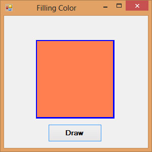
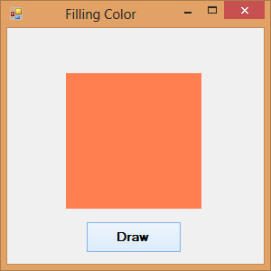
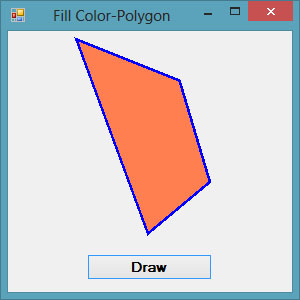

Visual Studio 2013 Lesson 30: Creating Graphics-Filling Shapes with Color
[Lesson 29] << [Contents] >> [Lesson 31]
In order to fill the above shapes with color, we need to create the Brush object using the following syntax:
myBrush = New SolidBrush(Color.myColor)
Where myColor can be any color such as red,blue, yellow and more. You don’t have to worry about the names of the colors because the intellisense will display the colors and enter the period after the Color key word.
30.1 Drawing and Filling a Rectangle with Color
In Visual Studio 2013 , the syntax to fill a rectangle with the color defined by the brush object is:
myGraphics.FillRectangle (myBrush, 0, 0, 150, 150)
Example 30.1
Dim myBrush As Brush
Dim myGraphics As Graphics = Me.CreateGraphicsmyPen = New Pen(Drawing.Color.Blue, 5)
myBrush = New SolidBrush(Color.Coral)
myGraphics.DrawRectangle(myPen, 65, 50, 150, 150)
myGraphics.FillRectangle(myBrush, 65, 50, 150, 150)
End Sub
The output is as shown in Figure 30.1
Figure 30.1
{kind=link}
*Note that if you omit the line myGraphics.DrawRectangle(myPen, 65, 50, 150, 150), you will get a solid rectangle without outline, as shown in in Figure 30.2
Figure 30.2
{kind=link}
30.2 Drawing and Filling an Ellipse with Color
The syntax to fill a ellipse with the color defined by the brush object is:
myGraphics.FillEllipse (myBrush, 0, 0, 150, 150)
Example 30.2
Private Sub BtnDraw_Click(sender As Object, e As
EventArgs) Handles BtnDraw.ClickDim myPen As Pen
Dim myBrush As Brush
Dim myGraphics As Graphics = Me.CreateGraphicsmyPen = New
Pen(Drawing.Color.Blue, 5)
myBrush = New SolidBrush(Color.Coral)
myGraphics.DrawEllipse(myPen, 50, 50, 180, 100)
myGraphics.FillEllipse(myBrush, 50, 50, 180, 100)
End Sub
The output interface is as shown in Figure 30.3
{kind=link}
Figure 30.3
*If you omit the line myGraphics.DrawEllipse(myPen, 50, 50, 180, 100), you will get a solid ellipse without outline.
30.3 Drawing and Filling a Polygon with Color
The syntax to fill a polygon with the color defined by the brush object is:
myGraphics.FillPolygon(myBrush, myPoints)
Example 30.3
Private Sub BtnDraw_Click(sender As Object, e As EventArgs) Handles BtnDraw.Click
Dim myPen As Pen
Dim myBrush As Brush
Dim A As New Point(70, 10)
Dim B As New Point(170, 50)
Dim C As New Point(200, 150)
Dim D As New Point(140, 200)
Dim myPoints As Point() = {A, B, C, D}
myPen = New Pen(Drawing.Color.Blue, 5)
myBrush = New SolidBrush(Color.Coral)
Dim myGraphics As Graphics = Me.CreateGraphics
myGraphics.DrawPolygon(myPen, myPoints)
myGraphics.FillPolygon(myBrush, myPoints)
End Sub
The output interface is as shown in Figure 30.4
Figure 30.4
{kind=link}
* if you omit myGraphics the line DrawPolygon(myPen, myPoints), you will get a polygon without outline
30.4 Drawing and Filling a Pie
The syntax to fill a pie with the color defined by the brush object is:
myGraphics.FillPie(myBrush, X, Y, width, height, StartAngle, SweepAngle)
Example 30.4
Private Sub BtnDraw_Click(sender As Object, e As EventArgs) Handles BtnDraw.Click
Dim myPen As Pen
Dim myBrush As Brush
Dim myGraphics As Graphics = Me.CreateGraphics
myPen = New Pen(Drawing.Color.Blue, 5)
myBrush = New SolidBrush(Color.Coral)
myGraphics.DrawPie(myPen, 30, 40, 150, 150, 0, 60)
myGraphics.FillPie(myBrush, 30, 40, 150, 150, 0, 60)
End Sub
The output is as shown in Figure 30.5
{kind=link}
Figure 30.5